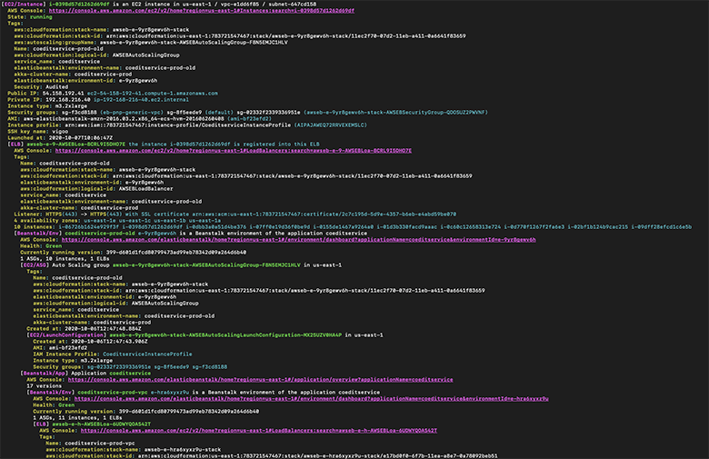

ZIO-AWS with ZIO Query
A few years ago I wrote a post about how I refactored one of our internal tools at Prezi. This command line tool was able to discover a set of AWS resources and present them in a nice human readable way. The primary motivation at that time was to introduce circuit breaking to survive AWS API rate limits.
I have recently published a set of libraries, zio-aws, and thought it would be interesting to rewrite this tool on top of it, and use this opportunity to try out ZIO Query on a real-world example. In this post I’m going to show step by step how to build an efficient and easily extensible query tool with the help of ZIO libraries. The full source can be found on GitHub.
The task
The CLI tool we build will get an arbitrary string as an input, and search for it in various AWS resources. Once it has a match, it has to traverse a graph of these resources and finally pretty-print all the gathered information to the console.

The provided input could mean any of the following:
- An EC2 instance ID
- An ELB (load balancer)’s name
- An ElasticBeanstalk environment name or ID
- An ElasticBeanstalk application name
- An ASG (auto-scaling group) ID
For the level of detail to be reported I copied the original tool. This means finding all the related resources in the above sets (plus among launch configurations) but only include a single EC2 instance in the output if it was explicitly queried. So for example if the search term matches an ELB that belongs to an ElasticBeanstalk environment, the report will contain the EB app and all its other environments as well, but won’t show individual instances. This choice does not affect the design and could be easily changed or extended with additional resource types.
AWS client
For querying the above mentioned resources, we have to call four different AWS services. The zio-aws project adds a streaming ZIO wrapper for all the libraries in AWS Java SDK v2, each published as separate artifact:
libraryDependencies ++= Seq(
"io.github.vigoo" %% "zio-aws-autoscaling" % zioAwsVersion,
"io.github.vigoo" %% "zio-aws-ec2" % zioAwsVersion,
"io.github.vigoo" %% "zio-aws-elasticloadbalancing" % zioAwsVersion,
"io.github.vigoo" %% "zio-aws-elasticbeanstalk" % zioAwsVersion
"io.github.vigoo" %% "zio-aws-netty" % zioAwsVersion,
)In addition to loading the necessary client libraries, we also need one of the http implementations, in this case I chose the default Netty. Other possibilities are akka-http and http4s. If your application already uses one of these for other HTTP communications you may want to use them to share their configuration and pools.
The client libraries have a ZStream API for all the operations that either support streaming (like for example S3 download/upload) or pagination, and ZIO wrapper for non-streaming simple operations. Instead of using the Java SDK’s builders, the requests are described by case classes, and the result types have convenience accessors to handle the nullable results.
Let’s see some examples!
We can get information about EB applications with the ElasticBeanstalk API’s DescribeApplications operation. This is defined like the following in zio-aws-elasticbeanstalk:
def describeApplications(request: DescribeApplicationsRequest): ZIO[ElasticBeanstalk, AwsError, DescribeApplicationsResponse.ReadOnly]
type ApplicationName = String
case class DescribeApplicationsRequest(applicationNames: Option[Iterable[ApplicationName]])
case class DescribeApplicationsResponse(applications : Option[Iterable[ApplicationDescription]])
object DescribeApplicationsResponse {
trait ReadOnly {
def editable: DescribeApplicationsResponse
def applicationsValue: Option[List[ApplicationDescription.ReadOnly]]
def applications: ZIO[Any, AwsError, List[ApplicationDescription.ReadOnly]]
}
}A few things to notice here:
- The client function requires the
ElasticBeanstalkmodule. We will see how to set up the dependencies in the Putting all together section. - The primitive types defined by the AWS schema are currently simple type aliases. In the future they will be probably replaced by zio-prelude’s newtypes.
- Each wrapper type has a
ReadOnlytrait and a case class. The case classes are used as input, and the read-only interfaces as outputs. This way the result provided by the Java SDK can be accessed directly and it only has to be rewrapped in the case class if it is passed to another call as input. - In many cases the AWS SDK describes fields as optional even if in normal circumstances it would never be
None. To make it more convenient to work with these, theReadOnlyinterface contains accessor functions which fail withFieldIsNonein case the field did not have any value. The pure optional values can be accessed with thexxxValuevariants. SeeapplicationsandapplicationsValuein the above example.
For operations support pagination, the wrapper functions return a stream. The actual first AWS call happens when the stream is first pulled. An example for this that we have to use in this application is the EC2 API’s DescribeInstances operation.
def describeInstances(request: DescribeInstancesRequest): ZStream[Ec2, AwsError, Reservation.ReadOnly]The pagination can be controlled by setting the MaxResults property in DescribeInstancesRequest. For the user of the describeInstances function this is completely transparent, the returned stream will gather all the results, possibly by performing multiple AWS requests.
Queries
We could implement the resource discovery directly using the low level AWS wrappers described above, using ZIO’s tools to achieve concurrency. There are several things to consider though:
- We don’t know what resource we are looking for, so we should start multiple queries in parallel to find a match as soon as possible
- Some queries return additional data that could be reused later. For example it is not possible to search for an ELB by a instance ID contained by it; for that we have to query all load balancers and check the members on client side.
- There are AWS operations that support querying multiple entities, for example by providing a list of IDs to look for
- We should minimize the number of calls to AWS, both for performance reasons, and to avoid getting rate limited
We can achieve all this by expressing our AWS queries with a higher level abstraction, delegating the execution to a library called ZIO Query. This library let us define composable queries to arbitrary data sources, and it automatically provides pipelining, batching and caching. A perfect match for the problem we have to solve here.
To be able to cache results that became available as a side effect of a query, we need a recent improvement that is not published yet, so aws-query currently uses a snapshot release of zio-query:
libraryDependencies += "dev.zio" %% "zio-query" % "0.2.5+12-c41557f7-SNAPSHOT"The first step is to define custom data sources. Data sources must implement a function runAll with the following signature:
def runAll(requests: Chunk[Chunk[A]]): ZIO[R, Nothing, CompletedRequestMap]Here A is the request type specific to a given data source (extending Request[E, A], and the returned CompletedRequestMap will store an Either[E, A] result for each request. The two nested chunks model sequential and parallel execution: the requests in the inner chunks can be executed in parallel, while these batches contained by the outer chunk must be performed sequentially. In practice we won’t implement this method but use DataSource.Batched that is a simplified version that can perform requests in parallel but does not make further optimizations on the requests to be performed sequentially.
What should belong to one data source? It could be a single data source for all the AWS queries, or one per service, or one per resource type. The best choice in this case is to have one for each resource type, for the following reasons:
- There are no opportunities to do any cross-resource-type caching. For example when we are querying EC2 instances, we won’t fetch auto scaling groups as a side effect.
- If all requests are about the same data type, implementing the data source is much simpler
Let’s see a simple example. EC2 instances can be queried by instance ID with the DescribeInstances operation, and it supports querying for multiple IDs in a single request. We first define a request type:
case class GetEc2Instance(id: InstanceId) extends Request[AwsError, Instance.ReadOnly]Then the data source:
val ec2InstancesDataSource: DataSource[Logging with Ec2, GetEc2Instance] =
DataSource.Batched.make("ec2") { (requests: Chunk[GetEc2Instance]) =>
import AwsDataSource._
for {
result <- ec2.describeInstances(DescribeInstancesRequest(instanceIds = Some(requests.map(_.id))))
.mapM(_.instances)
.flatMap(instances => ZStream.fromIterable(instances))
.foldM(CompletedRequestMap.empty) { (resultMap, item) =>
for {
instanceId <- item.instanceId
} yield resultMap.insert(GetEc2Instance(instanceId))(Right(item))
}
.recordFailures("DescribeInstances", requests)
} yield result
}Here requests holds a set of GetEc2Instance requests to be performed in parallel. We can simply do this by taking all the instance IDs from these requests and performing a single describeInstances AWS call. The result, as I explained before, is a ZStream of instances. We have to construct a CompletedRequestMap holding one entry for each request in requests. To do this we foldM the stream, using the instanceId accessor function to reconstruct the request value for each item in the result stream.
The .recordFailures function is a helper extension method defined in AwsDataSource. It catches all errors and produces a CompletedRequestMap where all requested items are recorded as failures:
def recordFailures[A](description: String,
requests: Iterable[Request[AwsError, A]]): ZIO[R, Nothing, CompletedRequestMap] =
f.catchAll { error =>
log.error(s"$description failed with $error") *>
ZIO.succeed {
requests.foldLeft(CompletedRequestMap.empty) { case (resultMap, req) =>
resultMap.insert(req)(Left(error))
}
}
}This is necessary because the data source requires a function of type Chunk[A] => ZIO[R, Nothing, CompletedRequestMap] that cannot fail.
With the data source defined, we can define primitive queries on it:
def getEc2Instance(id: InstanceId): ZQuery[Logging with Ec2, AwsError, Instance.ReadOnly] =
ZQuery.fromRequest(GetEc2Instance(id))(ec2InstancesDataSource)A more complex example is ebEnvDataSource, the data source of ElasticBeanstalk environments. For this resource, we have different request types:
sealed trait EbEnvRequest[+A] extends Request[AwsError, A]
case class GetEnvironmentByName(name: EnvironmentName)
extends EbEnvRequest[Option[EnvironmentDescription.ReadOnly]]
case class GetEnvironmentById(id: EnvironmentId)
extends EbEnvRequest[Option[EnvironmentDescription.ReadOnly]]
case class GetEnvironmentByApplicationName(name: ApplicationName)
extends EbEnvRequest[List[EnvironmentDescription.ReadOnly]]In the data source implementation we get a Chunk of EbEnvRequest to be performed in parallel. We start it by separating it per request type:
val byName = requests.collect { case GetEnvironmentByName(name) => name }
val byId = requests.collect { case GetEnvironmentById(id) => id }
val byAppName = requests.collect { case GetEnvironmentByApplicationName(name) => name }Then for each of these collections, if not empty, we can perform a describeEnvironments AWS call and then fold the result stream to create partial CompletedRequestMap values. What is interesting here is that if we already queried an environment by either name or id or it’s application name, we already know both its identifier and name, so we can store additional items in CompletedRequestMap that will be cached and reused in future queries. For example this is how the query by-id gets processed:
resultMap <- elasticbeanstalk
.describeEnvironments(DescribeEnvironmentsRequest(environmentIds = Some(byId)))
.foldM(initialResultMap) { (resultMap, item) =>
for {
name <- item.environmentName
id <- item.environmentId
} yield resultMap
.insert(GetEnvironmentById(id))(Right(Some(item)))
.insert(GetEnvironmentByName(name))(Right(Some(item)))
}
.recordFailures("DescribeEnvironmentRequest(id)", byId.map(GetEnvironmentById))For all three request types we describe the computation to create a partial CompletedRequestMap for them. Then we can implement the data source by executing these (maximum) three queries in parallel and combining the results:
byNameResultMap
.zipWithPar(byIdResultMap)(_ ++ _)
.zipWithPar(byAppNameResultMap)(_ ++ _)There are some cases where being able to query all instances of a given resource is also a requirement. An example is load balancers, where the only way to find if an ELB contains a given EC2 instance is to query all ELBs and check their members. There are a few more cases that require a very similar implementation, so it makes sense extracting it to a common place. We define an AllOrPerItem trait that defines the specifics per use case:
trait AllOrPerItem[R, Req, Item] {
val name: String
def isGetAll(request: Req): Boolean
def isPerItem(request: Req): Boolean
val allReq: Req
def itemToReq(item: Item): ZIO[R, AwsError, Req]
def getAll(): ZStream[R, AwsError, Item]
def getSome(reqs: Set[Req]): ZStream[R, AwsError, Item]
def processAdditionalRequests(requests: Chunk[Req],
partialResult: CompletedRequestMap): ZIO[R, Nothing, CompletedRequestMap] =
ZIO.succeed(partialResult)
}By implementing these one-liners the actual data source implementation can be a shared code defined in AllOrPerItem.make. It’s very similar to the examples already seen. If any of the requests is the get all request, that’s the only thing to be performed, and all the result items will be cached. Otherwise a single batched request is made.
These primitive ZQuerys then can be composed to more complex queries. For example the following code:
for {
instance <- ec2query.getEc2Instance(instanceId)
imageId <- ZQuery.fromEffect(instance.imageId)
imgElb <- (ec2query.getImage(imageId) <&> elbquery.loadBalancerOf(instanceId))
(image, elb) = imgElb
elbReport <- optionally(elb)(getElbReport)
result <- // ...
} yield result This is part of the definition of a query of type ZQuery[QueryEnv, AwsError, LinkedReport[Ec2InstanceKey, Ec2InstanceReport]]. We will talk about QueryEnv and LinkedReport later, for now it’s enough to understand that this is a more complex query that provides an EC2 instance report; the data type that will be used to render the human-readable output. The query first gets an EC2 instance by instance ID. Then with ZQuery.fromEffect we lift a ZIO effect to the query. In this case this is a zio-aws accessor function that fails if imageId is None.
By this we express that we expect that imageId is always specified, and if not, we fail the whole query. Then we use <&> (it’s alias is zipPar) to perform two queries in parallel: getting an EC2 image and finding the load balancer containing the instance. Once both queries are finished, we optionally generate a load balancer report (if we have found an ELB link) and then we construct the result.
Here optionally is a simple helper function that makes our query more readable. It could have been written as elb.fold(ZQuery.none)(getElbReport).
Another useful combinator on ZQuery is collectAllPar that runs a subquery on each item of a collection in parallel:
for {
elbNames <- ZQuery.fromEffect(asg.loadBalancerNames)
result <- ZQuery.collectAllPar(elbNames.map(name => elbquery.getLoadBalancer(name) >>= getElbReport))
} yield resultAs I mentioned earlier, we have no way to know what resource we are looking for (in fact we could for example detect EC2 instance IDs by a pattern but let’s ignore that for now). So on top level we simply start _all the possible queries at once and let print all the non-failing ones:
for {
renderers <- ZQuery.collectAllPar(possibleQueries).run
_ <- ZIO.foreach_(renderers.flatten)(identity)
} yield ()Where possibleQueries is a where we list all the queries we want to support, tied to the renderer to show it on the console.
Report cache
ZIO Query solves caching and optimizes the requests on the AWS resource level, but we still have a problem. The queries form a cyclic graph. For example an EC2 instance holds a link to its load balancer, that holds a link to the EB environment it is defined in. The environment refers back to the ELB, and it also links to the EB app and the application has again links to all the environments it contains.
We want to collect all these resources exactly once, and there is a chance that parallel queries reach to the same resource. To solve this we can add an extra caching layer on top of ZIO Query. Let’s define this caching layer as a ZIO module:
object ReportCache {
trait Service {
def storeIfNew[A <: Report](reportKey: ReportKey,
query: ZQuery[Any, AwsError, A]): ZQuery[Any, AwsError, Boolean]
def retrieve[A <: Report](key: ReportKey): ZIO[Any, AwsError, Option[A]]
}
}The storeIfNew function is a query, to be used in high level queries to shortcut cycles in case a given report is already stored in the cache. We can define a helper function cached like the following:
protected def cached[R <: ReportCache with Logging, A, B <: Report, K <: ReportKey]
(input: A)
(keyFn: A => ZIO[Any, AwsError, K])
(query: K => ZQuery[R, AwsError, B]): ZQuery[R, AwsError, LinkedReport[K, B]] =
for {
key <- ZQuery.fromEffect(keyFn(input))
env <- ZQuery.environment[R]
_ <- storeIfNew(
key,
query(key).provide(env ? "provided environment")
)
} yield LinkedReport[K, B](key)Then we can use it in queries like this:
def getEbAppReport(name: ApplicationName): ZQuery[QueryEnv, AwsError, LinkedReport[EbAppKey, EbAppReport]] =
cached(name)(name => ZIO.succeed(EbAppKey(name))) { (key: EbAppKey) =>
// ...
}Let’s see in detail how this works!
First of all, we define the following types:
final case class LinkedReport[+K <: ReportKey, +R <: Report](key: K)
sealed trait ReportKey
final case class Ec2InstanceKey(instanceId: InstanceId) extends ReportKey
// ...
sealed trait Report
final case class Ec2InstanceReport(instanceId: ec2.model.primitives.InstanceId,
// ...
elb: Option[LinkedReport[ElbKey, ElbReport]]
) extends ReportIn cached, we provide a keyFn that is an effectful function to extract the ReportKey from the arbitrary input that can be the key itself, or an already fetched resource. Then we call the ReportCache module’s storeIfNew query and return a LinkedReport. A linked report is just a wrapper around a report key, it is the type to be used in Report types to refer to each other. We store the cyclic resource graph by using these report keys and the cache’s retrieve function to resolve the references on demand.
One thing to notice is the .provide in the code of cached. The report cache does not know about the environments needed for the queries it caches the results of; the query parameter of storeIfNew has the type ZQuery[Any, AwsError, A]. For this reason cached eliminates the environment of its inner query by getting it and calling .provide(env) before passing it to the cache.
The report cache itself can be implemented with STM. First we create a TMap:
cache <- TMap.empty[ReportKey, Promise[AwsError, Report]].commitWe want to store the fact that a query has been started for a given report key. This can be modelled with a Promise that eventually gets a Report value. With this TMap structure, the storeIfNew function can be defined as:
override def storeIfNew[A <: Report](reportKey: ReportKey,
query: ZQuery[Any, AwsError, A]): ZQuery[Any, AwsError, Boolean] =
ZQuery.fromEffect {
for {
promise <- Promise.make[AwsError, Report]
finalQuery <- cache.get(reportKey).flatMap {
case Some(report) =>
// replacing the query with the cached value
ZSTM.succeed(ZQuery.succeed(false))
case None =>
// replacing the query with the cached value
cache.put(reportKey, promise).map { _ =>
query.foldM(
failure => ZQuery.fromEffect(promise.fail(failure)) *> ZQuery.fail(failure),
success => ZQuery.fromEffect(promise.succeed(success))
)
}
}.commit
} yield finalQuery
}.flatMap(identity)This may seem simple but actually we are combining three different layers of abstraction here!
- The whole thing is a query. But we first run a ZIO effect that produces a query, and then execute that result query (in
.flatMap(identity)) - In the effect we create a promise that might be used or not, depending on the outcome of the transaction. Then we do
cache.getwhich is an STM transaction. - In the transaction we produce a
ZQueryvalue that is either returning a simplefalsevalue if the report was already cached, or we store the already created promise in the map and return the query that constructs the report as the result of the transaction. - As it is an STM transaction it may be retried multiple times but eventually it returns with a query that is either a NOP or calculates the report and sets the promise in the end.
The other function of ReportCache, retrieve will be used when traversing the gathered reports to follow the LinkedReport links. It is simply a combination of getting an item from the TMap and then waiting for the stored promise.
Throttling
The original implementation of this tool did not control the amount and rate of AWS requests in any way, and a few years ago API rate limits made it somewhat unusable. As I explained in a previous post, I solved it by centralizing the calls to AWS then adding circuit breaking and retry to handle the throttling errors.
In this new implementation ZIO Query ’s batching feature already reduces the load but AWS has a global rate limit that can be reached any time, regardless of the actual request rate provided by this application. So how could we handle this with zio-aws and ZIO Query?
There is useful ZIO library called rezilience that defines utilities to express circuit breaking, retries, rate limiting and other similar policies. With this library we can create a policy that detects AwsErrors representing throttling failures:
private def throttlingPolicy: ZManaged[Random with Clock with Logging, Nothing, Policy[AwsError]] =
for {
cb <- CircuitBreaker.make[AwsError](
trippingStrategy = TrippingStrategy.failureCount(1),
resetPolicy = Retry.Schedules.exponentialBackoff(min = 1.second, max = 1.minute),
isFailure = {
case GenericAwsError(error: AwsServiceException) if error.isThrottlingException => true
}
)
retry <- Retry.make(min = 1.second, max = 1.minute)
retryComposable = retry.widen[PolicyError[AwsError]] { case Policy.WrappedError(e) => e }
} yield cb.toPolicy compose retryComposable.toPolicyThis will open a circuit breaker in case of throttling errors, and retry the operation with exponential back-off.
These policies can be applied to ZIO effects. What we really need is to apply a policy like this to all AWS call. It should be the actual call to the underlying AWS Java SDK, not on the zio-aws wrapper level, because for example a streaming API function may produce multiple AWS requests.
The zio-aws library supports applying AwsCallAspects on the AWS service client layers to modify the underlying SDK calls. This is exactly what we need to apply the throttling policy to all calls! What’s even better, by creating a single throttlingPolicy and applying it to all the service layers (ec2, elasticloadbalancing, elasticbeanstalk and autoscaling) they will share a common circuit breaker that matches the situation perfectly as the AWS API rate limiting is applied to globally to all services.
An AWS call aspect has the following form:
val throttling = new AwsCallAspect[Any] {
override def apply[R1, A](f: ZIO[R1, AwsError, Described[A]]): ZIO[R1, AwsError, aspects.Described[A]] =
policy(f).mapError {
case Policy.WrappedError(e) => e
case Policy.BulkheadRejection => AwsError.fromThrowable(new RuntimeException(s"Bulkhead rejection"))
case Policy.CircuitBreakerOpen => AwsError.fromThrowable(new RuntimeException(s"AWS rate limit exceeded"))
}
}Another simple example could be logging all AWS requests:
val callLogging: AwsCallAspect[Logging] =
new AwsCallAspect[Logging] {
override final def apply[R1 <: Logging, A](f: ZIO[R1, AwsError, Described[A]]): ZIO[R1, AwsError, Described[A]] =
f.flatMap { case r@Described(_, description) =>
log.info(s"[${description.service}/${description.operation}]").as(r)
}
}These aspects can be applied to a zio-aws ZLayer directly, such as:
ec2.live @@ (throttling >>> callLogging)Rendering
With the queries and report cache ready the last missing building block is rendering the gathered reports. We implement it in its own ZIO module with the following interface:
object Rendering {
trait Service {
def renderEc2Instance(report: LinkedReport[Ec2InstanceKey, Ec2InstanceReport]): UIO[Unit]
def renderElb(report: LinkedReport[ElbKey, ElbReport], context: Option[String]): UIO[Unit]
def renderAsg(report: LinkedReport[AsgKey, AsgReport]): UIO[Unit]
def renderEbEnv(report: LinkedReport[EbEnvKey, EbEnvReport]): UIO[Unit]
def renderEbApp(report: LinkedReport[EbAppKey, EbAppReport]): UIO[Unit]
}
}The live implementation of course needs access to ReportCache and writes the report out to Console:
val live: ZLayer[Console with ReportCache, Nothing, Rendering] = // ...We need two main things to implement report rendering:
- A way to pretty-print reports to the console
- We have to track which report was already rendered to be able to traverse the cyclic result graph
To track the already printed reports we can simply create a Ref holding a set of visited ReportKeys:
private case class State(alreadyVisited: Set[ReportKey])
// ...
alreadyVisited <- Ref.make(State(Set.empty))For pretty printing the reports there are several possibilities. Eventually we want to call console.putStr to write to the console. The original implementation of this tool used a string templating engine to define the output. Instead of doing that we can write a pretty-printing DSL to define our output in Scala. Take a look at the following example:
ifNotVisitedYet(report) { env =>
sectionHeader("Beanstalk/Env") <-> highlighted(env.name) <->
details(env.id) <->
normal(s"is a Beanstalk environment of the application ${env.appName}") \\
indented {
keyword("AWS Console") <:>
link(s"https://console.aws.amazon.com/elasticbeanstalk/home?region=${env.region}#/environment/dashboard?applicationName=${env.appName}&environmentId=${env.id}") \\
keyword("Health") <:> highlighted(env.health.toString) \\
keyword("Currently running version") <:> normal(env.version) \\
normal(s"${env.asgs.size} ASGs, ${env.instanceCount} instances, ${env.elbs.size} ELBs") \\
env.elbs.foreach_(elb(_, None)) \\
env.asgs.foreach_(asg) \\
ebApp(env.app)
}
}We can see here a couple of functions and operators, all created to the specific task of printing AWS resource reports:
ifNotYetVisitedYetmust somehow interact with theRefwe defined above<->concatenates two texts with a space<:>concatenates two texts with a colon and a space\\concatenates two texts with a newlinekeyword,link,normal,highlightedetc. add styling to the given textforeach_is coming fromzio-prelude-sTraversable. We will see why is it used soon.
We could define these styling functions as ZIO effects and the helper operators as general extension methods on ZIO. Then we could store required state (for example for indentation) in a Ref for example. This works but we can do better. By defining our own monadic data type Print[A] we get the following advantages:
- It is more type safe. The pretty printing operators will be only applicable to pretty printing functions, not to arbitrary ZIO effects
- Pretty printing state gets completely hidden from the pretty printing definitions
- We can easily do some optimizations such as collapsing multiple newlines into one, which makes rendering optional lines more convenient
So let’s define a data type to represent pretty printing:
sealed trait Print[+A]
final case class PrintPure[A](a: A) extends Print[A]
final case class PrintS(s: String) extends Print[Unit]
final case class PrintModified(s: String, modifiers: String) extends Print[Unit]
final case object PrintNL extends Print[Unit]
final case class PrintIndented[A](p: Print[A]) extends Print[A]
final case class PrintFlatMap[A, B](a: Print[A], f: A => Print[B]) extends Print[B]
final case class PrintEffect[A](f: UIO[A]) extends Print[A]PrintPure and PrintFlatMap can be used to implement zio-preludes type classes:
implicit val print = new Covariant[Print] with IdentityFlatten[Print] with IdentityBoth[Print] {
override def map[A, B](f: A => B): Print[A] => Print[B] =
fa => PrintFlatMap(fa, (a: A) => PrintPure(f(a)))
override def any: Print[Any] =
PrintPure(())
override def flatten[A](ffa: Print[Print[A]]): Print[A] =
PrintFlatMap(ffa, (fa: Print[A]) => fa)
override def both[A, B](fa: => Print[A], fb: => Print[B]): Print[(A, B)] =
PrintFlatMap(fa, (a: A) => map((b: B) => (a, b))(fb))
}What are these type classes providing to us?
Covariantbasically gives usmapIdentityFlattenmeans that the data type can be “flattened” associatively and has an identity element. This gives usflattenandflatMap.IdentityBothmeans we have an associative binary operator to combine two values. This enables syntax like<*>.
Having this we can define primitive pretty printing operators like:
def normal(text: String): Print[Unit] = PrintS(text)
val space: Print[Unit] = PrintS(" ")
implicit class PrintOps[A](self: Print[A]) {
def <->[B](next: => Print[B]): Print[B] =
self *> space *> next
// ...
}Then we can use the syntax provided by zio-prelude to compose these pretty printer values. The only thing remaining is to provide a transformation of Print[A] to UIO[A]. This is where we can hide the pretty printer state and can handle special rules like collapsing newlines:
private trait PrettyConsole {
protected val console: Console.Service
private case class PrettyState(indentation: String, afterNL: Boolean)
private def printFlatMap[A, B](a: Print[A], f: A => Print[B], state: PrettyState): UIO[(B, PrettyState)] =
for {
r1 <- runImpl(a, state)
r2 <- runImpl(f(r1._1), r1._2)
} yield r2
private def runImpl[A](p: Print[A], state: PrettyState): UIO[(A, PrettyState)] =
p match {
case PrintPure(a) => ZIO.succeed((a, state))
case PrintS(s) => ZIO.when(state.afterNL)(console.putStr(state.indentation)) *>
console.putStr(s).as(((), state.copy(afterNL = false)))
case PrintModified(s, modifiers) => ZIO.when(state.afterNL)(console.putStr(state.indentation)) *>
console.putStr(s"${modifiers}$s$RESET").as(((), state.copy(afterNL = false)))
case PrintNL =>
if (state.afterNL) ZIO.succeed(((), state))
else console.putStrLn("").as(((), state.copy(afterNL = true)))
case PrintIndented(f) => runImpl(f, state.copy(indentation = state.indentation + " ")).map { case (a, s) =>
(a, s.copy(indentation = state.indentation)) }
case PrintFlatMap(a, f) => printFlatMap(a, f, state)
case PrintEffect(f) => f.map((_, state))
}
def run[A](p: Print[A]): UIO[A] = runImpl(p, PrettyState("", afterNL = false)).map(_._1)
}A couple of things to notice here:
PrettyStateholds the indentation and a flag that is true when the last print was a new linerunImplgets the state as input and has the capability to modify it, by returning the modified state together with the computation’s result- there is a
PrintEffectconstructor that allows lifting arbitraryZIOeffects to the pretty printer. This is needed for interacting with theRefthat holds the record of already printed reports.
Putting all together
Putting all this together means getting command line arguments, setting up the AWS client libraries, the report cache and the rendering modules and running the top level queries.
To parse the command line arguments we can use my clipp library:
final case class Parameters(verbose: Boolean,
searchInput: String,
region: String)
// ...
val paramSpec = for {
_ <- metadata("aws-query", "search for AWS infrastructure resources")
verbose <- flag("Verbose logging", 'v', "verbose")
searchInput <- parameter[String]("Search input", "NAME_OR_ID")
region <- optional { namedParameter[String]("AWS region", "REGION", "region") }
} yield Parameters(verbose, searchInput, region.getOrElse("us-east-1"))
val params = clipp.zioapi.config.fromArgsWithUsageInfo(args, paramSpec)The verbose flag is used to set up logging. We use zio-logging with SLF4j support (to be able to see logs from the underlying AWS Java SDK) with lo4j2 backend. In order to control the log level by the command line verbose flag, instead of the usual XML-based configuration for log4j2 we define a ZIO layer that’s only purpose is to perform the configuration programmatically:
private def log4j2Configuration: ZLayer[Has[ClippConfig.Service[Parameters]], Throwable, Has[Log4jConfiguration]] = {
ZLayer.fromServiceM[ClippConfig.Service[Parameters], Any, Throwable, Log4jConfiguration] { params =>
ZIO.effect {
val builder = ConfigurationBuilderFactory.newConfigurationBuilder()
// ...
Configurator.initialize(builder.build())
Log4jConfiguration()
}
}This way the root logger’s level can depend on the Parameters parsed by clipp. Composing this layer with zio-loggers Slf4jLogger gives us a working Logging layer:
val logging = log4j2Configuration >+> Slf4jLogger.make { (_, message) => message }By bootstrapping the parameters and the logging we can run our main application like this:
for {
result <- awsQuery()
.provideCustomLayer(params >+> logging)
.catchAll { _ => ZIO.succeed(ExitCode.failure) }
_ <- ZIO.effect(LogManager.shutdown()).orDie
} yield resultThe clipp parser will print detailed usage info in case it fails, and other runtime errors are logged, so we can simply catch all errors and exit with a failure on top level.
In awsQuery we create all the other layers necessary for running the queries. First we need to create the throttling policy that is used by all the AWS service clients as I explained above:
private def awsQuery(): ZIO[Random with Clock with Console with Logging with ClippConfig[Parameters], Nothing, ExitCode] =
throttlingPolicy.use { policy => The zio-aws library uses ZIO Config for configuration. This means we need a ZConfig[CommonAwsConfig] to construct the AwsConfig layer:
val commonConfig = ZLayer.succeed(CommonAwsConfig(
region = Some(Region.of(params.region)),
credentialsProvider = DefaultCredentialsProvider.create(),
endpointOverride = None,
commonClientConfig = None
))
val awsCore = (netty.default ++ commonConfig) >>> core.config.configured()The AwsConfig layer combines the configuration with a selected HTTP backend. In our case this is the Netty backend, using its default configuration.
Then we define the per-service client layers, applying the throttling and call logging aspects as I described before:
val awsClients =
ec2.live @@ (throttling >>> callLogging) ++
elasticloadbalancing.live @@ (throttling >>> callLogging) ++
elasticbeanstalk.live @@ (throttling >>> callLogging) ++
autoscaling.live @@ (throttling >>> callLogging)To produce the final layer, we feed the logging and the AwsConfig layers to the client layers, and add the ReportCache and Render implementations:
val finalLayer =
((ZLayer.service[Logger[String]] ++ awsCore) >>> awsClients) ++
((Console.any ++ cache.live) >+> render.live)This has the environment ClippConfig[Parameters] with Console with Logging with ReportCache with Rendering with AllServices where
type AllServices = Ec2 with ElasticLoadBalancing with ElasticBeanstalk with AutoScalingConclusion
We reimplemented the tool to query AWS resources using functional programming techniques, built on top of ZIO libraries. By separating the execution from the problem specification we get an easily readable and maintainable code that can be easily extended with new queries or reports without having to thing about how caching and concurrency is implemented under the hood. We can rate limit AWS requests without touching the actual queries, and take advantage of batching AWS operations while keeping the query logic simple and unaware of this optimization.
comments powered by Disqus